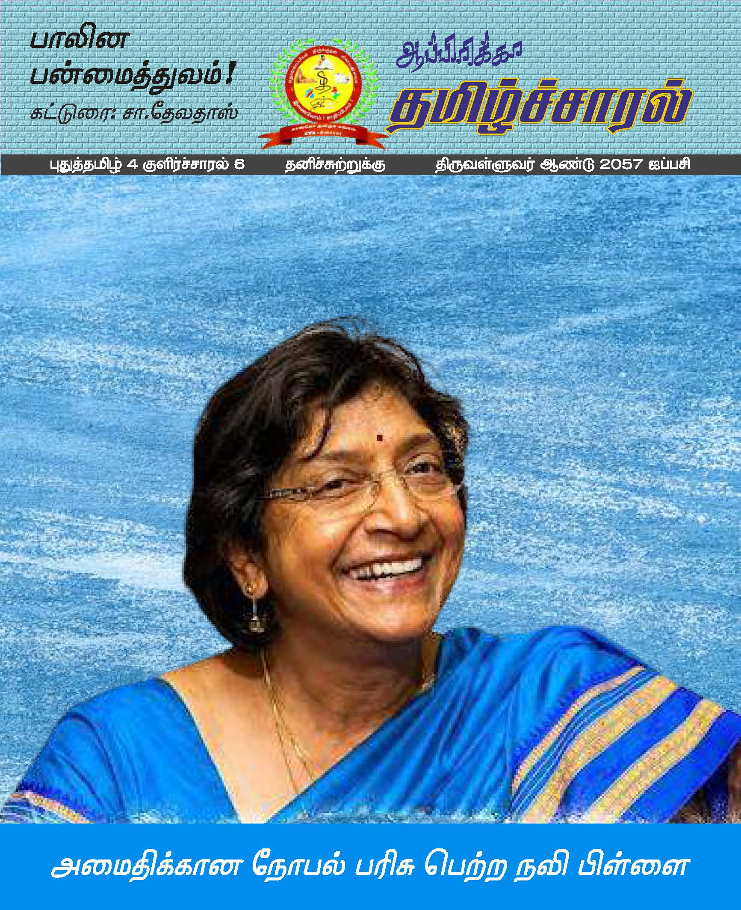
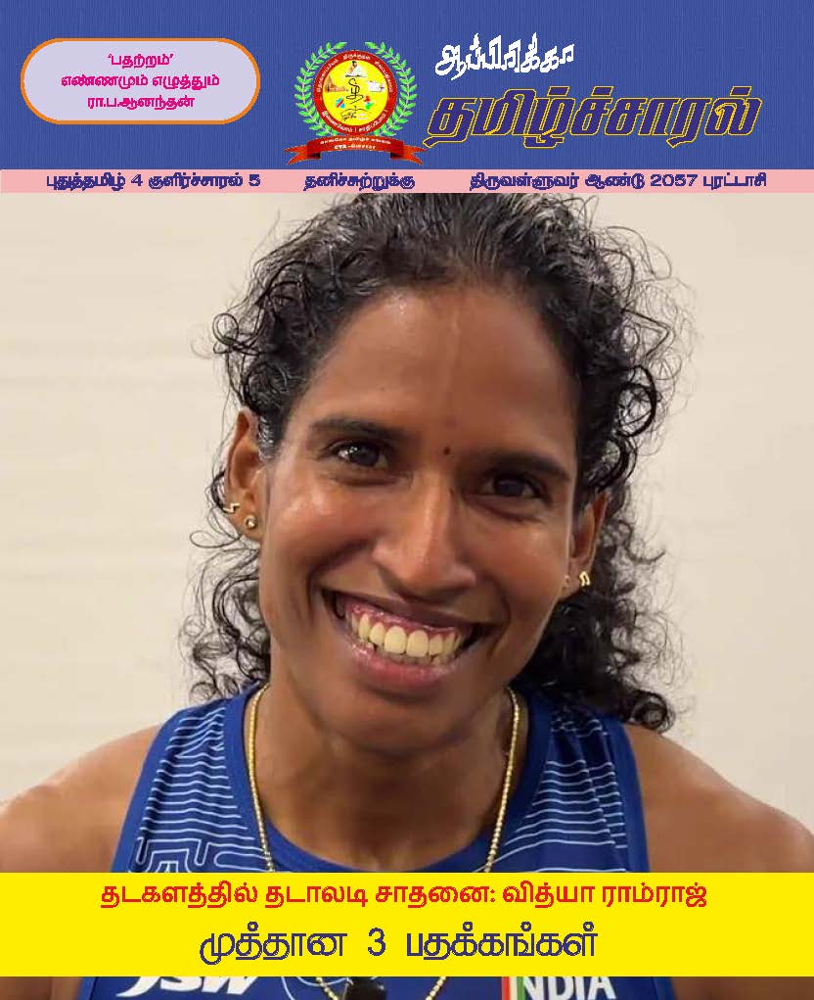

A bi-monthly Tamil publication celebrating language, literature, culture and the life of the Tamil community in Africa.
ஆப்பிரிக்காவில் வாழும் தமிழ் மக்களின் மொழி, இலக்கியம், பண்பாடு, வாழ்வைக் கொண்டாடும் தமிழ் இதழ்.
ஆப்பிரிக்கா வாழ் அன்புத் தமிழ் உறவுகளுக்கு வணக்கம்! ஆப்பிரிக்காவின் ஒரே தமிழ் பல்சுவைத் திங்களிதழ்!
கடல் கடந்தும் தமிழ் வளர்ப்போம்! கரம் கோர்த்துத் தமிழ் படைப்போம்!
Greetings to our dear Tamil relatives in Africa! Africa's only Tamil multi-flavour monthly. Let us nurture Tamil across the seas — hand in hand, let us create in Tamil!
Read our latest editions online or download the PDF.சமீபத்திய இதழ்களை இணையத்தில் படிக்கலாம்; PDF-ஆகப் பதிவிறக்கலாம்.

Africa Tamil Charal – Aippasi (Ippasy) Issue – 2026

Africa Tamil Charal – Purattasi Issue – 2026
Contribute your stories, poems and articles to Africa Tamil Charal.
உங்கள் கதைகள், கவிதைகள், கட்டுரைகளை ஆப்பிரிக்கத் தமிழ்ச்சாரலுக்கு அனுப்புங்கள்.
Get in touchதொடர்பு கொள்ள →